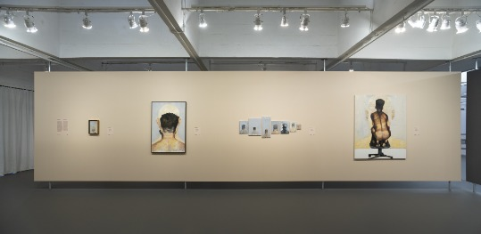

Leonilson: Agora e as Oportunidades - Focada nos anos finais de sua vida, esta exposição com mais de 300 trabalhos, revela como Leonilson usou sua arte para refletir sobre questões íntimas e sociais. Suas obras variam entre bordados, pinturas, desenhos, expressam sentimentos profundos sobre amor, perda e identidade
Lia D Castro: Em Todo e Nenhum Lugar - A primeira exposição individual da artista Lia D Castro no MASP, que conta com 36 trabalhos, destaca temas como poder, masculinidade e exclusão social. Suas obras incluem pinturas e fotografias que são criadas a partir de suas experiências pessoais, refletindo sobre as dinâmicas de poder e afeto na sociedade
Acervo em Transformação - Em exibição desde 2015, essa exposição exibe peças que são alteradas de tempos em tempos do acervo do MASP. As obras são exibidas sem molduras e sem barreiras, o que permite que as pessoas se aproximem mais das peças. O objetivo é que a exposição sempre mostre novas perspectivas e maneiras de ver a arte